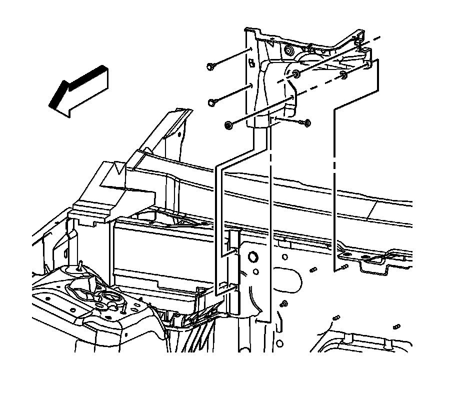
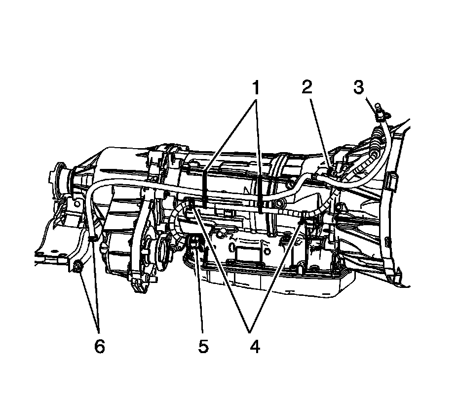

Transmission Vent Hose Replacement
Vent Hose Replacement (All Wheel Drive)
Removal Procedure

1. Remove the air inlet housing front panel to gain access to the vent hose upper retainer. Refer to Air Inlet Grille Panel Replacement (Service and Repair) .

2. Remove the vent hose from the retainer (3) located on the rear of the right cylinder head.
3. Raise and support the vehicle. Refer to Lifting and Jacking the Vehicle (Service and Repair) .
4. Remove the vent hose from the retainers (6) located on the transmission mount assembly.
5. Support the transmission with a suitable jack.
6. Remove the transmission mount assembly. Refer to Transmission Mount Replacement (Rear Wheel Drive) (Transmission Mount Replacement (Rear Wheel Drive))Transmission Mount Replacement (All Wheel Drive) (Transmission Mount Replacement (All Wheel Drive)) .
7. Cut the tie straps (1) that secure the vent hose to the transmission wiring harness.
8. Lower the transmission and remove the vent hose from the vent tube (2).
9. Remove the vent hose assembly from the vehicle.
Installation Procedure
1. Install the vent hose assembly to the vehicle.
2. Connect the vent hose to the vent tube (2).
3. Raise the transmission to the installed position.
4. Install new tie straps (1) to secure the vent hose to the transmission wiring harness. Do not collapse the vent hose while tightening the tie straps.
5. Install the transmission mount assembly. Refer to Transmission Mount Replacement (Rear Wheel Drive) (Transmission Mount Replacement (Rear Wheel Drive))Transmission Mount Replacement (All Wheel Drive) (Transmission Mount Replacement (All Wheel Drive)) .
6. Remove the jack.
7. Install the vent hose to the retainers (6) located on the mount assembly.
8. Lower the vehicle.
9. Install the vent hose to the retainer (3) located on the rear of the right cylinder head.
10. Install the air inlet housing front panel. Refer to Air Inlet Grille Panel Replacement (Service and Repair) .